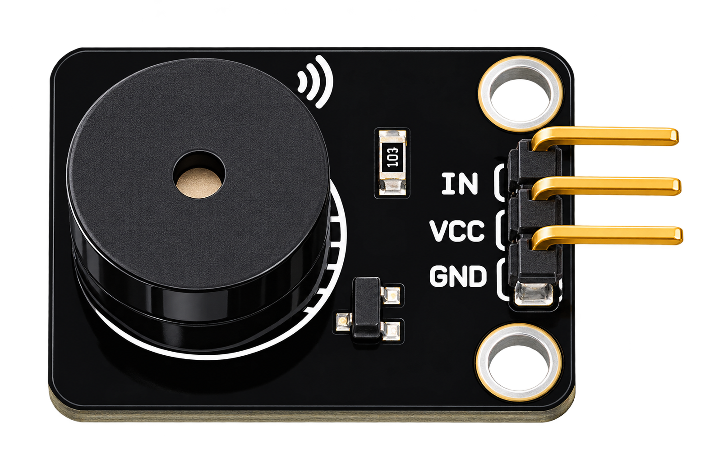
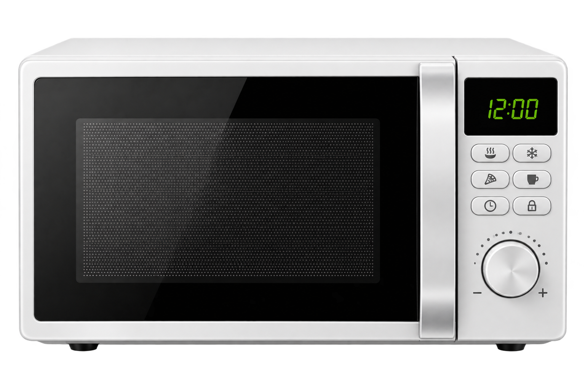
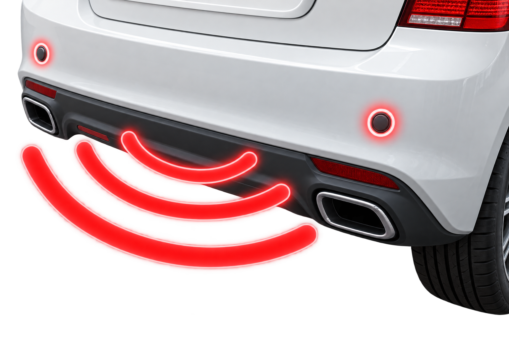

⛶
중학교 피지컬 컴퓨팅
출력 장치
수동버저
1. 개념
수동 버저(Passive Buzzer)는 전기 신호를 소리로 바꾸어 여러 가지 음을 낼 수 있는
어떻게 소리가 날까요?
출력 장치
입니다.

수동버저 모듈
핀 역할 보기 ⓘ
화재·연기 경보기

전자레인지

주차 보조 경고음
알람시계
2. 수동버저 회로 연결
VCC → 5V, GND → GND, IN → D3 순서로 연결합니다.
2026학년도 수남중 10719 이예준
2026학년도 수남중 10515 백연정
‹
›
1 / 6
×